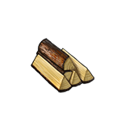

Получено: файл; исходный URL. Изображение подписано на странице-источнике; файл получен с зеркала. Совпадение с оригиналом не проверено. Страница: источник.


Дрова
Мой Мир; публикация 15.07.2011; редакция неизвестна- Тип
- Материалы
- Покупка
- нет данных
- Продажа
- нет данных
- Как получить
- [изображение: Замок] Изготовить в Замке (ВКонтакте, ZOMBIA; требует сверки).
- Применение
- нет данных
- Особенности
- нет данных
- Версия и дата
- Мой Мир; публикация 15.07.2011; редакция неизвестна
Данные по источнику · Мой Мир · публикация 15.07.2011; редакция неизвестна
Предварительно: историческая статья, требует сверки. Требуется сверка.
Данные по источнику · ВКонтакте, ZOMBIA · 13 Августа 2011, 21:35; дата редакции не установлена
Предварительно: Данные одной исторической фанатской страницы; цифры и подписи изображений требуют сверки. Описание и условия сохранены по колонкам без додумывания.. Требуется сверка.
- Описание материала
- [изображение: зомби ферма, зомби мания, дрова] Дрова
- Участвует в строительстве
- нет текстовых данных; возможны неподписанные изображения
- Как достать
- [изображение: Замок] Изготовить в Замке
- Участвует в создании
- Нужны, чтобы разжечь огонь в Стоунхедже
Данные по источнику · браузерная Зомби Ферма / Зомби Мания; платформа требует проверки · дата URL не гарантирует дату редакции
Предварительно: Индивидуальная страница прочитана автоматически, подписи значков могут содержать ошибки; даты редакции и независимость от ЗомбиСити не установлены.. Требуется сверка.
- Основной блок страницы и подписи изображений
- Материал [иллюстрация: Дрова] Дрова Цена покупки: 1 [иллюстрация: Зомбаксы] Цена продажи: 500 [иллюстрация: Монеты] Продать или купить Дрова можно в Обменке Зомби Фермы Дрова Зомби Фермы - производственный материал от бревен различных деревьев. Дрова можно создать в специальной построке, можн добыть Палочками в Подземелие. Дрова можно создать в постройке Замок: Дрова [иллюстрация: Дрова] = 10 Бревна [иллюстрация: Бревна] + 1 Шестерня [иллюстрация: Шестерня] [иллюстрация: Стрелка] Замок [иллюстрация: Замок] Дрова [иллюстрация: Дрова] = 5 Бревна пальмы [иллюстрация: Бревна пальмы] + 1 Шестерня [иллюстрация: Шестерня] [иллюстрация: Стрелка] Замок [иллюстрация: Замок] Дрова [иллюстрация: Дрова] = 1 Секвойя [иллюстрация: Секвойя] + 1 Шестерня [иллюстрация: Шестерня] [иллюстрация: Стрелка] Замок [иллюстрация: Замок] Дрова нужны для путешествия на некоторые зимние острова: Остров Маленькой ёл [иллюстрация: Остров Маленькой ёлочки] Остров Большой ёлки [иллюстрация: Остров Большой ёлки] Остров Огромной ёлк [иллюстрация: Остров Огромной ёлки] 2 Дрова [иллюстрация: Дрова] + 2 Вода [иллюстрация: Вода] + 2 Бревна пальмы [иллюстрация: Бревна пальмы] Дрова участвуют в создании материала: Огонь [иллюстрация: Огонь] Стена [иллюстрация: Стена] Участвуют в строительстве: Очаг [иллюстрация: Очаг] Шаттл [иллюстрация: Шаттл] Семейное гнездо [иллюстрация: Семейное гнездо] Разрушенный корабль [иллюстрация: Задание Разрушенный корабль в Зомби Ферме] Корабль [иллюстрация: Корабль] Звездная станция [иллюстрация: Звездная станция] Дрова можно добыть в Складе Хакера из Подземных водорослей: Подземные водоросли [иллюстрация: Подземные водоросли] Подземные водоросли [иллюстрация: Подземные водоросли] Подземные водоросли [иллюстрация: Подземные водоросли] Подземные водоросли [иллюстрация: Подземные водоросли] Подземные водоросли [иллюстрация: Подземные водоросли] Подземные водоросли [иллюстрация: Подземные водоросли] Подземные водоросли [иллюстрация: Подземные водоросли] Видео - Добываем Дрова Палочками под землей игры Зомби Ферма:
Связанные сущности
нет проверенных связей — требуется сверка.